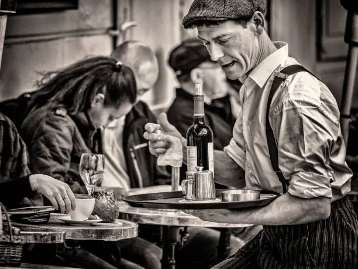

Au cœur du Vieux Lille, notre brasserie familiale perpétue depuis plus de 35 ans l'art ancestral du brassage. Née de la passion de Pierre Delcroix pour les bières du Nord, notre maison cultive l'excellence à travers des recettes traditionnelles transmises de génération en génération.
Chaque bière raconte une histoire, celle de notre terroir, de nos malts soigneusement sélectionnés et de notre savoir-faire artisanal qui fait la fierté de Lille.

Une brasserie authentique et passionnée !
⭐⭐⭐⭐
Superbe moment à la Brasserie du Vieux Lille. Nous avons participé à une visite guidée des installations : très bien expliquée, ludique et pleine d'anecdotes sur la fabrication de la bière. Dégustation à la fin, évidemment, avec des bières artisanales toutes excellentes ! On sent que les brasseurs aiment leur métier.